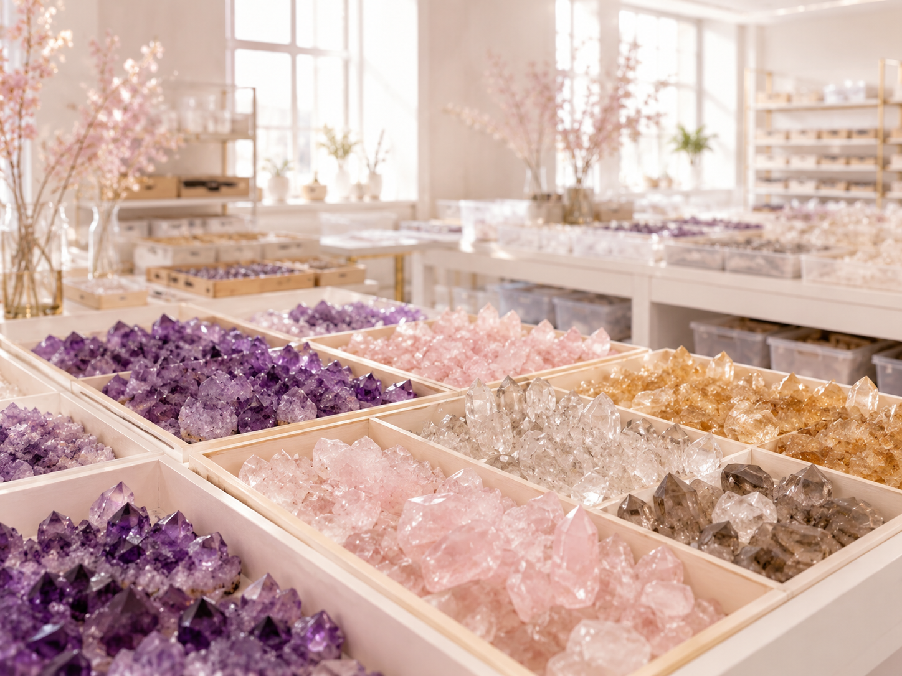
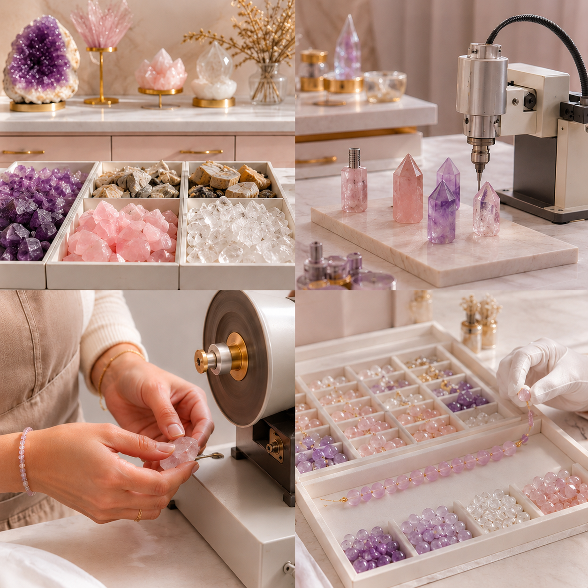
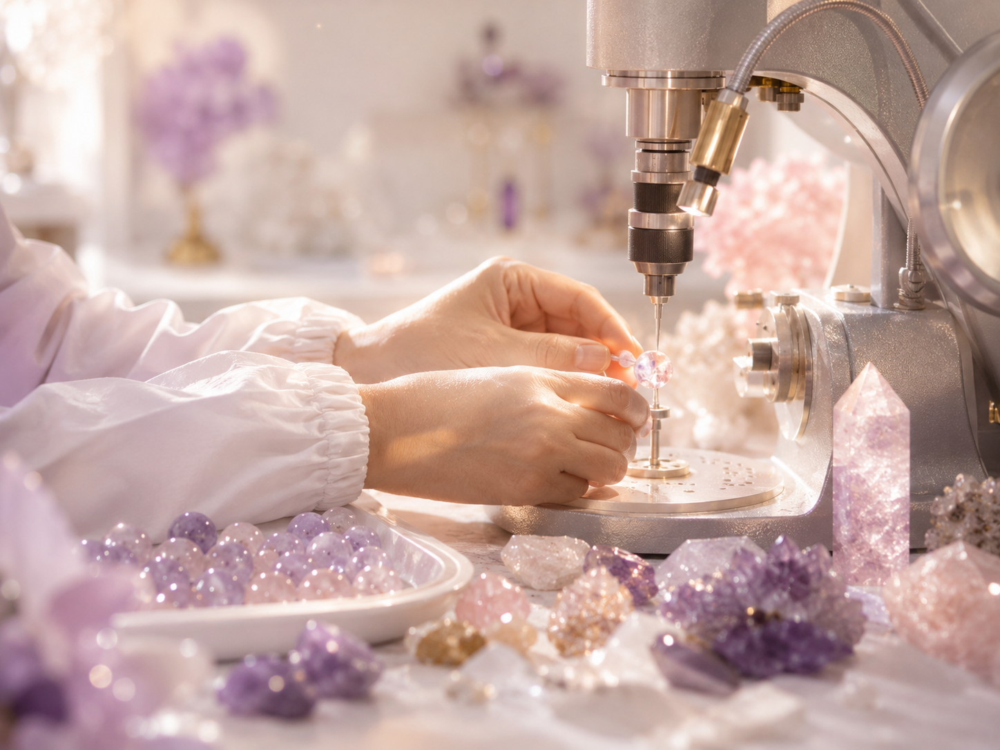
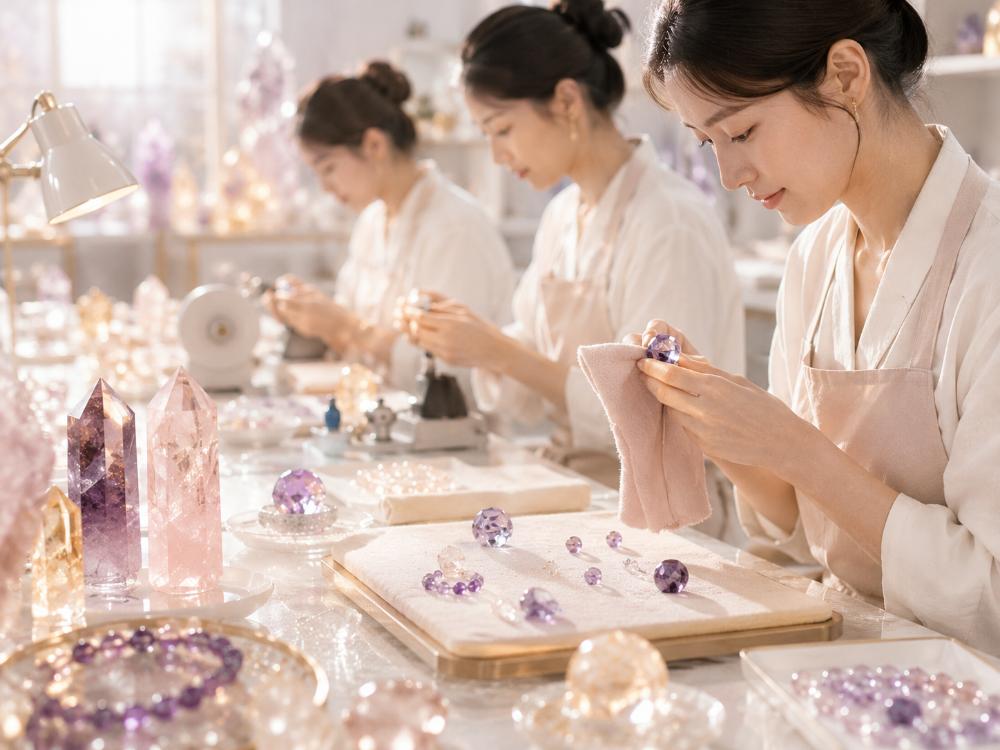

Raw Stone Sorting Warehouse
Brazil and Madagascar raw crystals are sorted by origin, color depth, clarity, natural texture and processing suitability before production planning.
Brazil MaterialMadagascar MaterialBatch Sorting
Factory Strength · Ethical Sourcing · Export Compliance
Show buyers the real source behind your crystal line: direct raw-stone selection, in-house cutting, precise drilling, hand polishing, piece-by-piece QC and ethical sourcing documentation support.

Real Factory Proof
This page is designed for wholesale buyers who need to confirm that AURANOVAGEMS is not a shell trading office, but a capable crystal sourcing and processing partner with transparent production, direct material access and a clear ethical pledge.
Three Core Workshops
Each production zone solves a different buyer concern: material authenticity, processing stability, finish quality and bulk-order consistency.

Brazil and Madagascar raw crystals are sorted by origin, color depth, clarity, natural texture and processing suitability before production planning.

Controlled cutting and high-concentricity drilling help reduce bead chipping, hole deviation, cord abrasion and breakage during daily wear.

Manual finishing and multi-stage buffing create a diamond-grade glassy sheen, smooth touch and premium retail appearance for bulk SKUs.
Compliance Confidence
Help buyers move from doubt to confidence with factory-facing information and order-level traceability support before sample approval or bulk payment.
Provide buyer-facing factory visuals, production workflow descriptions and process checkpoints that make your sourcing story transparent.
Support order notes for material type, batch selection, color range, treatment notes and buyer-approved sample references.
Foam, carton, pouch, gift box, barcode and protective wrapping options are prepared for cross-border wholesale and third-party warehouse receiving.
Insert cards, ethical sourcing statements, care cards and material description cards can be prepared for private label retail channels.
Legal & Ethical Pledge
We commit to transparent sourcing communication, responsible material handling and humane production standards so buyers can build crystal collections with fewer compliance concerns.
Factory Verification Funnel
Use this form to request factory details, raw material information, workshop process notes, QC standards or sample production support for your next wholesale crystal order.